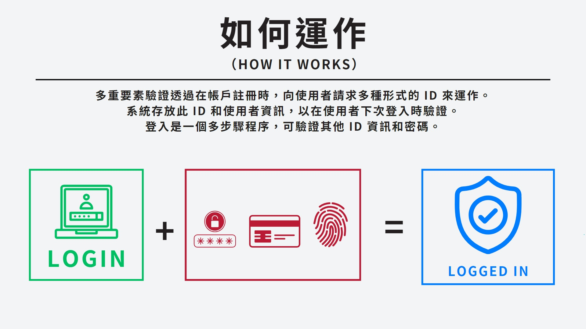

使用自動化工具，嘗試在短時間內以大量的可能性來猜測使用者的密碼，以獲取未授權的存取權.
密碼撞庫攻擊是指攻擊者使用從資料洩漏中獲得的帳號密碼組合，通過自動化工具在其他網站或應用中嘗試登入，以獲取未授權的存取權。
攻擊者通常使用自動化腳本或工具，如Sentry MBA、Snipr等，快速嘗試多個帳號密碼組合，提高成功率。
受影響的範圍不僅限於某個特定網站，任何使用相同或相似憑證的網站都可能成為攻擊目標，增加了用戶和企業的風險。
強制多因子認證（MFA）：即使攻擊者獲得了密碼，仍需其他驗證方式才能登入，增加了安全性。
實施異常行為檢測：監控異常的登入活動，如同一IP地址大量失敗的登入嘗試。
提高用戶的安全意識，告知他們不要在多個網站上使用相同的密碼，並了解密碼撞庫攻擊的危害。
2021年底，金管會開始強制金融機構採用多因子認證（MFA），主要原因包括：
多因子認證要求用戶提供多種驗證方式（如密碼和一次性驗證碼），即使密碼洩露，也能減少未授權的訪問。
隨著網絡攻擊手段日益增多，特別是密碼撞庫攻擊的頻繁發生，傳統的單一密碼驗證方式已經無法有效保護用戶賬戶安全。
隨著全球對數據保護和網絡安全的重視，許多國家和地區都制定了相關法規，要求企業和機構採取更高標準的安全措施。
多重要素驗證透過在帳戶註冊時，向使用者請求多種形式的 ID 來運作。 系統存放此 ID 和使用者資訊，以在使用者下次登入時驗證。 登入是一個多步驟程序，可驗證其他 ID 資訊和密碼。
多因子認證結合了不同的身份驗證因子 例如密碼、生物識別、智慧卡等，讓金融交易更加安全可靠。 金管會希望透過這項政策，提高金融機構和消費者對於資訊安全的意識 並促進金融科技的發展和應用.
